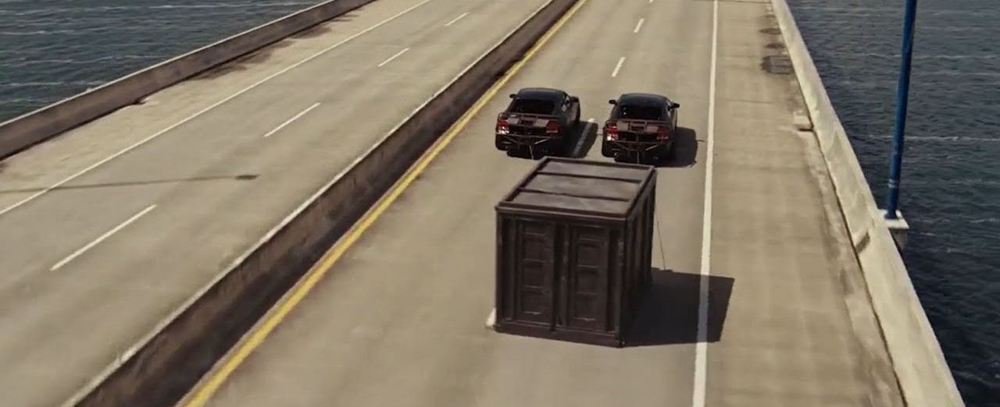

Cada noche, Los Ángeles es testigo de alguna carrera de coches. Últimamente ha aparecido un nuevo corredor,
todos saben que es duro y que es rápido, pero lo que no saben es que es un detective con la determinación de salir victorioso.
La saga de Rápido y Furioso tuvo un impacto significativo en el cine de acción al fusionar la velocidad, la adrenalina y el sentido de hermandad,
revolucionando el género y convirtiéndose en un fenómeno mundial. Sus películas han sido muy taquilleras, generando millones de dólares en ingresos
y popularizando la personalización de vehículos.
La saga combinó la acción con elementos de carreras callejeras y una fuerte camaradería entre los personajes, diferenciándose de otras películas de acción.
Las películas de Rápido y Furioso fueron rodadas en diversos lugares, con Los Ángeles siendo un lugar clave en la franquicia. La primera película
se grabó principalmente en Los Ángeles y sus alrededores, mientras que la segunda, "2 Fast 2 Furious", se rodó en Miami. Además, la saga ha utilizado locaciones
internacionales como Tokio, Londres, Edimburgo, Tiflis, Tailandia y Cuba.
Datos exclusivos de los rodajes
La escena de la caja fuerte en “Fast Five” fue en parte real.
En la famosa persecución con la caja fuerte arrastrada por Río de Janeiro (Fast Five), usaron una caja real montada sobre ruedas y con un conductor dentro, además de CGI. Esto hizo las escenas más creíbles y espectaculares.

La despedida de Brian en “Furious 7” fue completada con sus hermanos.
Tras la trágica muerte de Paul Walker en 2013, la producción utilizó a sus hermanos, Caleb y Cody Walker, como dobles de cuerpo, además de efectos visuales para completar sus escenas restantes en Furious 7.

Vin Diesel nombró a su hija en honor a Paul Walker
Vin Diesel, muy cercano a Paul, nombró a su hija “Pauline” en honor a su amigo. Lo considera parte de su familia tanto dentro como fuera de la pantalla.